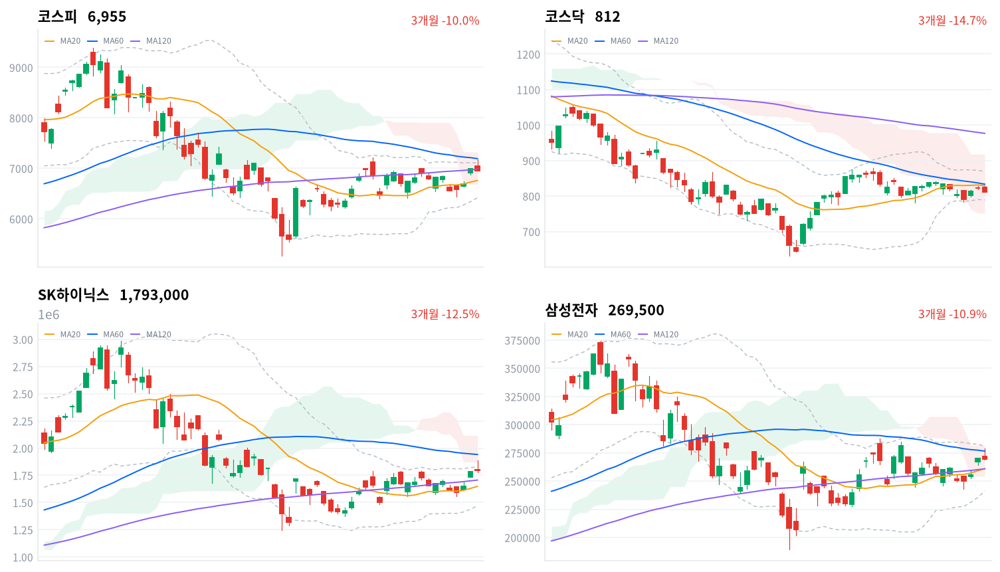
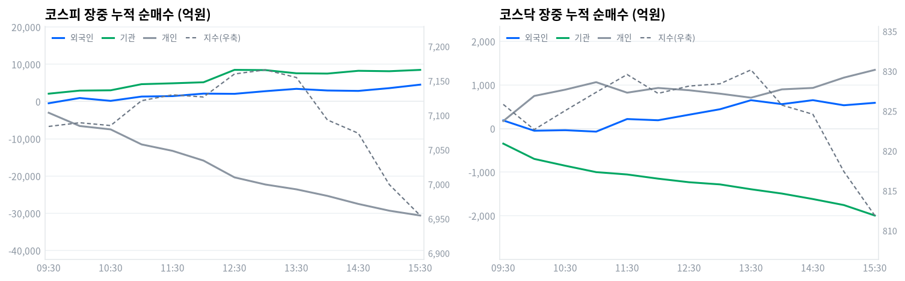

코스피는 오늘 장중 한때 7,172까지 오르며 반도체 랠리 이틀째를 이어갔지만, 정규장은 6,955로 0.58% 밀려 마감했다. 코스닥도 1.25% 내린 812로 마쳐 두 시장 모두 상승분을 반납했다.
외국인과 기관은 코스피에서 나란히 순매수했지만(각각 6,316억원·6,427억원, 당일 잠정) 개인이 3조329억원을 순매도하며 지수를 끌어내렸다. 60개 업종 중 17개만 올라 상승은 좁았다.
코스피는 오늘 장중 한때 7,172까지 올라 반도체 랠리 이틀째를 밀어붙였지만, 정규장은 0.58% 내려 마감했다. 코스닥도 1.25% 내려, 두 시장 모두 오전에 만든 상승분을 오후에 반납한 하루였다.
중요한 건 외국인과 기관이 코스피에서 모두 순매수했는데도 지수가 밀렸다는 점이다(당일 잠정). 개인이 두 주체 매수를 합친 규모의 두 배 넘는 물량을 순매도로 쏟아냈다. 업종도 60개 중 17개만 올라 상승은 좁았다. 반도체와반도체장비조차 171종목 중 37개(21.6%)만 올라 거의 움직이지 않았다.
위험 노출은 다음 세션까지 축소한다. 코스피 프로그램 매매의 방향성 바스켓인 비차익은 1,252억원 순매수에 그쳐 외국인·기관 매수의 방향과는 같지만 규모는 작았다(당일 잠정). 오늘처럼 매수 주체가 있어도 개인 물량에 눌리면 지수가 다시 밀릴 수 있다는 걸 확인한 하루라, 추격 매수보다는 개인 매도가 잦아드는지부터 지켜본다.
코스피가 20일 이동평균(6,760)을 지키는 동안은 오늘의 되돌림을 상승 추세 안의 조정으로 본다. 이 레벨을 내주면 오늘 급등이 하루짜리 반응이었다는 뜻이 되므로 판단을 다시 검토한다. 국고채 10년물이 4.401%에서 더 오르는 것도 같은 방향의 위험이다.
4일 미국장 기준으로 3대 지수가 모두 내렸다. S&P500이 0.38%, 나스닥이 0.29%, 다우가 0.51% 하락했다.
같은 날 아시아도 대체로 약세였다. 닛케이가 -1.70%, 대만가권이 -0.47%, 항셍이 -0.38%로 밀렸고 상해종합만 +0.20%로 올랐다. 아시아 평균은 -0.59%였는데 코스피(-0.58%)는 그와 거의 같은 수준에서 마쳤다.
오늘 코스피는 전일 종가보다 0.72% 높은 7,046에서 갭업 출발했다. 한국 정규장 오후 시간대(13:00~15:30) 미국 선물은 ES가 0.27%, 나스닥 선물(NQ)이 0.49% 내렸다. 두 선물 모두 이 구간에서 6차례씩 관측됐는데, 그 시간대가 코스피가 고점을 찍고 밀리기 시작한 흐름과 맞물린다.
오전 내내 오른 코스피는 낮 무렵 하루 고가권에 들어섰고, 정규장 마지막 30분에 하락 마감했다. 코스닥은 하루 저가에서 정규장을 마쳤다. 코스피는 하루 고가(7,172)에서 저가(6,952)까지 220포인트를 오간 뒤 하락 마감해, 하루 진폭 자체가 컸다.
원/달러 환율은 오전 10시반 1,336원으로 하루 중 가장 낮았다가 오후 3시반 1,346원까지 올라, 종가는 1,345원이었다. 하루 폭은 약 10원으로 원화 약세 흐름이 정규장 내내 이어졌다.
오전에는 반도체 랠리가, 오후에는 개인 매도가 시장을 움직였다. 오후 미국 선물이 함께 밀린 시간대(13:00~15:30)가 코스피 반락 구간과 겹쳐, 대외 위험회피 심리도 일부 거들었을 것으로 본다.
코스피는 오늘 장중 한때 7,172까지 올라 20일 고가(7,217)에 근접했다. 정규장은 6,955로 마감해 고가 대비 217포인트(3.12%)를 반납했다. 60일 이동평균(7,192)에는 아직 못 미치는 자리다.
코스닥은 1.25% 내린 812로 마감했다. 하루 고가(830)에서 저가(812)까지 상승분을 통째로 반납한 셈이고, 20일 이동평균(829)도 다시 밑돌았다.
| 지수 | 종가 | 등락률 | 시가 | 고가 | 저가 | 전일 종가 |
|---|---|---|---|---|---|---|
| 코스피 | 6,954.52 | -0.58% | 7,045.79 | 7,171.52 | 6,951.78 | 6,995.39 |
| 코스닥 | 811.88 | -1.25% | 825.03 | 830.21 | 811.88 | 822.19 |
전일 종가(6,995)보다 높은 7,046에서 갭업 출발한 코스피는 오전 내내 올랐다. 9시반에는 벌써 7,084로 시가를 웃돌아 상승 탄력을 확인시켰다.
오전 10시반에는 7,085로 잠시 숨을 고른 뒤 11시에 7,121로 다시 올라섰다. 11시반과 낮 12시반에는 각각 7,130, 7,160을 찍었다. 낮 1시 관측치 7,166이 이날 코스피 고점이었다.
이후 코스피는 밀리기 시작해 오후 2시 7,074, 오후 3시 6,999로 내려앉았다. 정규장 마지막 30분에는 6,955까지 더 밀려, 시가보다 91포인트 낮은 자리에서 마감했다.
오늘 코스닥은 전일 종가(822)보다 높은 825에서 출발했다. 오전과 오후 두 차례 830 부근까지 올랐지만 그때마다 다시 밀렸다.
오전 11시반에는 829로 830선에 바짝 붙었다가 낮 12시 827로 밀렸다. 오후 1시반에도 그 선 부근까지 다시 다가섰지만, 이번에도 뚫지 못하고 되돌아섰다.
오후 2시 825에서 오후 3시 817로 낙폭을 키운 코스닥은 정규장 마지막 30분에 하루 저가로 주저앉으며 마감했다. 오전에 만든 상승분을 오후에 전부 되돌린 흐름이다.

코스피·코스닥·SK하이닉스·삼성전자 3개월 일봉에 이동평균(20·60·120)·볼린저밴드·일목균형표 구름대를 오버레이했다. 상승 캔들은 녹색, 하락 캔들은 적색으로 표시된다.
코스피(6,955)는 이동평균이 혼조로 뒤섞인 채 20일 이동평균(6,760)은 웃돌지만 60일 이동평균(7,192)은 밑도는 자리에서 일목 구름 안으로 마감했다. 볼린저 상단(7,105)을 넘어서면 20일 고점(7,217)까지 열리고, 20일 이동평균이 무너지면 구름 하단(6,684)이 다음 지지다.
코스닥(812)은 이동평균이 역배열로 무너진 채 20일 이동평균(829)을 바로 위 저항으로 두고 일목 구름 안에서 마감했다. 20일 이동평균을 되찾으면 20일 고점(879)까지 여지가 생기고, 20일 저점(782)이 무너지면 일목 구름 하단(752)이 다음 지지다.
SK하이닉스(179만원)는 이동평균이 혼조인 가운데 볼린저 상단(182만7,000원) 바로 아래, 일목 구름 아래에서 마감했다. 볼린저 상단을 넘어서면 구름 하단(187만1,000원)이 다음 목표다. 120일 이동평균(170만6,000원)이 다음 지지다.
삼성전자(27만원)는 이동평균이 혼조인 가운데 일목 구름 안에서 60일 이동평균(27만7,000원) 바로 아래 마감했다. 60일 이동평균을 넘어서면 일목 구름 상단(28만2,000원)까지 열린다. 20일 이동평균(26만1,000원)이 무너지면 구름 하단(25만4,000원)이 다음 지지다.
위 레벨은 이동평균·볼린저밴드·일목균형표와 스윙 고저를 기계적으로 계산한 값이며 투자 권유가 아니다.
| 주체 | 순매수(억원) |
|---|---|
| 개인 | -30,329 |
| 외국인 | +6,316 |
| 기관 | +6,427 |
| 주체 | 순매수(억원) |
|---|---|
| 개인 | +479 |
| 외국인 | +1,583 |
| 기관 | -2,135 |
코스피에서는 외국인과 기관이 나란히 순매수했다(당일 잠정). 외국인이 6,316억원, 기관이 6,427억원을 사들였고 개인이 3조329억원을 순매도했다. 두 주체 매수를 합쳐도 개인 매도의 42%에 그쳐, 지수가 하락 마감한 이유를 여기서 확인할 수 있다.
직전 거래일인 9월7일에는 외국인이 2조5,532억원, 기관이 2조6,491억원을 순매수했다. 오늘은 두 주체 매수 규모가 각각 4분의 1 수준으로 줄었다.
코스닥은 방향이 코스피와 달랐다. 외국인이 1,583억원, 개인이 479억원을 순매수했고 기관만 2,135억원을 순매도했다(당일 잠정). 코스닥이 코스피보다 더 크게 내린(-1.25%) 데는 기관의 매도가 영향을 줬다.

누적 순매수(억원), 정규장 09:30~15:30 30분 앵커 기준. 지수는 우측 축.
| 시각 | 코스피(억원) | 코스닥(억원) | ||||
|---|---|---|---|---|---|---|
| 개인 | 외국인 | 기관 | 개인 | 외국인 | 기관 | |
| 09:30 | -3,021 | -467 | +2,103 | +172 | +186 | -346 |
| 10:00 | -6,571 | +938 | +2,929 | +748 | -50 | -697 |
| 10:30 | -7,481 | +173 | +3,007 | +892 | -38 | -853 |
| 11:00 | -11,517 | +1,331 | +4,652 | +1,064 | -71 | -1,000 |
| 11:30 | -13,243 | +1,451 | +4,888 | +823 | +218 | -1,054 |
| 12:00 | -15,859 | +2,120 | +5,164 | +931 | +190 | -1,150 |
| 12:30 | -20,361 | +2,061 | +8,490 | +879 | +317 | -1,232 |
| 13:00 | -22,281 | +2,775 | +8,431 | +800 | +443 | -1,282 |
| 13:30 | -23,573 | +3,402 | +7,576 | +708 | +650 | -1,393 |
| 14:00 | -25,330 | +2,957 | +7,498 | +899 | +560 | -1,492 |
| 14:30 | -27,492 | +2,847 | +8,243 | +932 | +651 | -1,618 |
| 15:00 | -29,304 | +3,589 | +8,132 | +1,168 | +534 | -1,756 |
| 15:30 | -30,603 | +4,528 | +8,488 | +1,346 | +590 | -1,996 |
코스피 외국인은 오전 9시46분 순매도에서 순매수로 돌아서 오전 10시 938억원까지 매수를 늘렸다. 지수도 같은 시간대 계속 올라 방향이 일치했다.
개인은 방향 전환 기록 없이 종일 순매도만 쌓았다. 누적 순매도는 오전 9시3분 594억원 순매수에서 오후 3시15분 3조1,191억원 순매도까지 커졌고, 이 흐름이 오후 반락의 바탕이 됐다.
기관 역시 전환 없이 매수를 늘렸다. 낮 12시반 8,490억원까지 늘었던 누적 매수는 오후 2시 7,498억원으로 잠시 줄었다가 정규장 마지막 관측(오후 3시반) 8,488억원으로 다시 늘었다.
이 되돌림 구간은 지수가 낮 1시 관측치 7,166에서 밀리기 시작해 오후 3시 6,999까지 내려앉은 시점과 겹친다. 개인의 누적 순매도가 오후 내내 가속한 반면 기관 매수는 한 차례 주춤했던 조합이 오후 반락을 만들었다고 볼 수 있다.
장중 누적 기준 기관 매수(정규장 마지막 관측 8,488억원)의 대부분은 금융투자에서 나왔다. 정규장 마지막 관측에서 금융투자는 8,871억원 순매수였고, 연기금등은 2,289억원 순매도로 반대 방향이었다.
프로그램 매매 전체 순매수는 808억원에 그쳐(뒤 표 참조) 금융투자의 장중 누적 매수 규모를 설명하기엔 한참 작다. 오늘 기관 매수는 선물 연계 기계적 매매보다 금융투자 자체 계정의 매수 비중이 컸다는 뜻이다.
코스닥 기관은 전환 없이 매도를 늘려 정규장 마지막 관측 1,996억원 순매도로 마쳤다. 금융투자가 641억원 순매도를 주도했고 연기금등은 81억원 순매수에 그쳐 존재감이 작았다.
정규장 마지막 관측에서 확정치로 넘어가며 코스피 외국인은 4,528억원에서 6,316억원으로 순매수를 더 늘렸다. 기관은 8,488억원에서 6,427억원으로 줄었고, 개인 순매도는 소폭 줄어든 확정치로 마무리됐다.
코스닥은 정반대로 움직였다. 외국인 순매수는 590억원에서 1,583억원으로 늘고 개인은 1,346억원에서 479억원으로 줄었다. 기관은 1,996억원에서 2,135억원 순매도로 더 늘었다.
다음 거래일에는 개인의 순매도가 오늘처럼 오후에 다시 가속하는지, 외국인·기관 매수가 그 규모를 다시 앞지르는지를 확인해야 한다. 매수 주체가 있어도 개인 물량에 눌리면 지수는 다시 밀릴 수 있다.
| 시장 | 차익 순매수(억원) | 비차익 순매수(억원) | 전체 순매수(억원) |
|---|---|---|---|
| 코스피 | -444 | +1,252 | +808 |
| 코스닥 | -131 | +792 | +661 |
코스피 프로그램 매매는 방향성 바스켓인 비차익이 1,252억원 순매수로 전체(808억원 순매수)보다 컸고, 차익은 444억원 순매도였다(당일 잠정). 비차익이 순매수였다는 방향은 외국인·기관의 잠정 순매수와 같다.
다만 규모는 크지 않다. 코스피 프로그램 전체 순매수(808억원)는 앞서 본 기관의 장중 누적 매수 규모에 크게 못 미쳐, 오늘 기관 매수 대부분이 프로그램 바스켓 밖에서 이뤄졌다는 뜻이다.
코스닥 프로그램은 비차익이 792억원 순매수로 전체(661억원 순매수)를 웃돌았고 차익은 131억원 순매도였다(당일 잠정). 코스닥 기관의 확정 순매도(2,135억원)와는 반대 방향이라, 프로그램 밖의 매도가 더 컸다는 뜻이다.
| 순위 | 종목/ETF | 구분 | 거래대금 | 비고 |
|---|---|---|---|---|
| 1 | SK하이닉스 | 개별주 | 7.59조원 | - |
| 2 | 삼성전자 | 개별주 | 6.20조원 | - |
| 3 | 반도체 테마 ETF | 테마·롱 | 2.02조원 | 9종 합산 |
| 4 | 삼성전자우 | 개별주 | 0.71조원 | - |
| 5 | SK하이닉스 레버리지 | 레버리지·롱 | 0.63조원 | 2종 합산 |
| 6 | 대우건설 | 개별주 | 0.54조원 | - |
| 7 | 두산에너빌리티 | 개별주 | 0.53조원 | - |
| 8 | 현대약품 | 개별주 | 0.32조원 | - |
| 9 | 한전기술 | 개별주 | 0.31조원 | - |
| 10 | 현대건설 | 개별주 | 0.23조원 | - |
단위 백만원 원본을 조 단위로 환산. 같은 기초자산 ETF는 방향별로, 같은 테마 섹터 ETF는 테마별로 묶었으며 코스피200·코스닥150 추종 지수 ETF 및 그 레버리지·인버스, 해외 ETF는 제외했다.
개별 반도체 3종목(SK하이닉스·삼성전자·삼성전자우) 합산 거래대금은 14.50조원으로, 반도체 테마 ETF 9종을 합친 2.02조원의 7.2배였다. 오늘도 거래는 바스켓이 아니라 개별 종목 쪽에서 훨씬 활발했다.
SK하이닉스 레버리지(0.63조원, 2종 합산)가 상위권에 들었고 인버스 상품은 한 줄도 없었다. 지수가 오후에 밀렸는데도 개인 자금은 여전히 반등 쪽 레버리지 상품에 몰렸다.
반도체 밖에서는 대우건설(0.54조원)·두산에너빌리티(0.53조원)·한전기술(0.31조원)이 순위에 올랐다. 건설(+2.72%) 업종 강세, 그리고 원전 관련 재료와 같은 자리를 가리킨다.
오늘은 60개 업종 중 17개만 오르고 43개가 내려, 코스피가 정규장을 하락으로 마친 것과 결이 같았다.
상승률 1위는 전기유틸리티(+6.25%)로 5종목 전부가 함께 올랐다. 다만 업종 규모가 작아 시장 전체 방향을 대표한다고 보기는 어렵다.
건설은 2.72% 올라 78종목 중 31개(40%)가 동반 상승했다. 상승 종목 비중(0.397)로 보면 폭넓은 상승 주도로 분류되고, 대우건설이 거래대금 상위(0.54조원)에 오른 것도 같은 흐름이다.
반면 반도체와반도체장비는 정규장을 0.10% 상승에 그쳤다. 171종목 중 37개(22%)만 올라 상승 종목 비중이 0.216에 그쳐 좁은 상승·개별종목으로 분류됐다. 거래대금은 SK하이닉스·삼성전자 두 종목에 14.50조원이 몰렸는데도 업종 전체 가격은 거의 움직이지 않았다.
내린 업종 중 가장 크게 밀린 손해보험이 1.57%, 화장품과 무선통신서비스가 나란히 1.46% 내렸다. 낙폭 자체는 크지 않았지만 내린 업종 수가 오른 업종의 2.5배가 넘었다.
SK하이닉스(179만원)는 거래대금 1위(7.59조원)를 지켰고 삼성전자(27만원)도 2위(6.20조원)에 올랐다. 씨비씨뉴스는 오픈AI가 전일 공개한 새 인공지능 모델 '아스트라'가 부른 메모리 수요 기대에 두 종목이 오전 한때 각각 5%대, 2~3%대 올랐다고 전했다. 다만 반도체와반도체장비 업종은 정규장을 0.10% 상승에 그쳐, 장중 급등분 대부분을 반납했다.
오피니언뉴스는 개인 매도가 몰리며 하락 종목 수가 상승 종목 수의 2.6배에 달했다고 전했다. 코스피 개인은 오늘 3조329억원을 순매도했는데, 전날(9월7일) 6조8,374억원보다는 줄었지만 여전히 큰 규모였다(당일 잠정).
한전기술(0.31조원)과 두산에너빌리티(0.53조원)는 거래대금 상위에 이름을 올렸다. 외교부는 이재명 대통령이 6일부터 9일까지 프랑스를 국빈방문해 원자력 등 첨단산업 협력을 논의한다고 밝혔다.
대우건설(0.54조원)도 상위권에 들었다. 건설 업종은 78종목 중 31개가 올라 2.72% 상승했고(상승 종목 비중 0.397), 오늘 업종 강세와 같은 자리를 가리킨다.
더페어는 알테오젠이 13.77% 올라 34만7,000원에 마감했다고 전했다. HLB도 8.98% 올라 4만650원을 기록했다. 신약 임상과 해외 허가 모멘텀을 보유한 개별 종목 강세로, 둘 다 거래대금 상위 10위 안에는 들지 않았다.
원/달러 환율은 오전 10시반 1,336원에서 오후 3시반 1,346원까지 오르며 하루 종일 원화가 약세로 기울었다. 국고채 10년물은 4.401%로 전일보다 1.6bp, 3년물은 3.901%로 0.1bp 올라 두 구간 모두 상승했다. 국고채 3년물은 기준금리(3.00%, 8월 기준)보다 90.1bp 높은 자리로, 채권시장이 추가 인상 가능성을 여전히 상당 부분 선반영하고 있다는 뜻으로 읽을 수 있다.
| 지표 | 금리 | 전일比(bp) | 기준일 |
|---|---|---|---|
| 국고채 3년 | 3.901% | +0.1 | 2026-09-08 |
| 국고채 10년 | 4.401% | +1.6 | 2026-09-08 |
| CD 91일 | 3.120% | 0.0 | 2026-09-08 |
| 회사채 AA- 3년 | 4.575% | 0.0 | 2026-09-08 |
| 한국은행 기준금리 | 3.00% | +25.0(전월比) | 2026-08 |
장기물과 단기물의 금리차(10년-3년)는 50.0bp로 전일 48.5bp보다 벌어졌다. 두 구간이 함께 오르는 가운데 10년물이 더 크게 올랐으니 방향은 베어 스티프닝이다. 국채 금리가 함께 오른 날 외국인은 코스피를 6,316억원 순매수(당일 잠정)했으니, 채권 매도와 주식 매수가 같은 날 엇갈린 셈이다.
회사채 AA- 3년물과 국고채 3년물의 신용 스프레드는 67.4bp로 전일 67.5bp와 거의 같았다. 신용 쪽에서 나온 별다른 경계 신호는 없다는 뜻이고, 그러면 오늘 국고채 금리가 오른 배경은 신용 경계보다는 국고채 자체의 수급 쪽에 더 가깝다고 본다.
CD 91일물은 3.120%로 전일과 변화가 없었다. 단기 지표금리는 멈춘 채 국고채 구간만 소폭 위로 밀렸는데, 단기 정책금리 기대는 그대로인 채 장기 구간에서만 수급이 흔들렸다는 뜻으로 볼 수 있다.
오늘은 금리가 오르고 원화도 약세인 가운데 코스피는 정규장을 0.58% 내려 마쳤다. 채권과 외환, 주식이 모두 같은 방향(위험 회피)을 가리킨 하루였다.
뉴시스와 한국경제에 따르면 하워드 러트닉 미국 상무장관이 지난 2일 반도체 완제품을 포함한 신규 관세 검토를 밝혔다. 김정관 산업통상자원부 장관은 지난해 10월 협상에서 한국 반도체를 경쟁국보다 불리하게 대우하지 않겠다는 미국 측 확인을 받았다고 재확인했고, 대미 투자 1호 프로젝트도 9월 중 발표될 예정이라고 언급했다.
관세가 실제 부과되면 국내 반도체 수출기업의 대미 판가와 마진이라는 이익 경로를 직접 건드린다. 유예·투자 조건부 방식이 유력해 당장의 수급 충격보다는 불확실성 프리미엄, 즉 멀티플 할인으로 먼저 작용하는 재료다.
오늘 반도체와반도체장비는 장중 한때 크게 올랐지만 정규장은 0.10% 상승에 그쳐 급등분 대부분을 반납했다. 관세 리스크가 눌린 것이라기보다는 개인 매도가 이익 기대를 압도한 결과에 가까워, 관세 재료는 아직 가격에 충분히 반영되지 않은 상태로 본다.
9월 중 한국의 대미 투자 1호 프로젝트 발표가 다음 확인 트리거다. 관세 부과 여부와 시점은 아직 미확정이다.
외교부는 이재명 대통령이 9월6일부터 9일까지 프랑스를 국빈방문해 국방·안보, 교역·투자, 인공지능·반도체·양자·우주·원자력 등 첨단전략산업 협력 확대에 합의했다고 밝혔다. 협정 개정 3건과 MOU·협력의향서 11건이 체결됐고, 원전 공급망과 연구개발 협력도 논의됐다.
원전 협력은 수주 파이프라인을 통해 이익에 닿는 경로다. 정부 간 합의가 먼저이고 기자재·시공 계약이 뒤따르는 순서라, 오늘의 발표 자체가 당장 매출을 바꾸지는 않지만 수주 잔고 기대를 통해 관련 업종의 이익 전망을 위로 옮긴다.
오늘 가격은 그 방향과 맞았다. 한전기술과 두산에너빌리티가 나란히 거래대금 상위(각각 0.31조원·0.53조원)에 올랐다. 다만 오늘 거래대금의 절대적인 몫은 반도체 두 종목(14.50조원)이 가져갔으니, 원전 재료는 지수 전체보다 업종 안에서만 반영됐다고 보는 게 맞다.
정상회담은 9일 종료 예정이다. 회담에서 원전 협력의 구체적 진전이 문서로 나오는지, 아니면 선언에 그치는지를 다음 확인 트리거로 둔다.
김·장 법률사무소와 법률신문에 따르면 자기주식을 원칙적으로 취득 후 1년 안에 소각하도록 하는 3차 상법 개정안이 지난 2월 국회 본회의를 통과했다. 토스뱅크와 KB생각 자료에 따르면 고배당 기업 배당소득에 14~30%를 매기는 분리과세도 올해 받는 배당금부터 3년 한시로 적용된다.
두 제도는 서로 다른 경로로 붙는다. 자사주 강제 소각은 주식 수를 실제로 줄여 주당 지표를 올리는 이익 경로이고, 배당 분리과세는 고배당주의 세후 수익률을 높여 국내 자금을 다시 주식으로 돌리는 수급 경로다.
수혜 후보는 자사주가 쌓여 있고 배당 여력이 있는 저평가 대형주, 특히 은행·금융지주다. 그런데 오늘은 은행이 0.91% 내려 11종목 중 1개만 올랐고(상승 종목 비중 0.091), 기타금융만 0.97% 올랐다. 고배당 수혜가 업종 전반에 고르게 나타나지 않았으니, 이 재료는 오늘 가격에 아직 반영되지 않은 것으로 본다.
기업들이 보유 자사주 처분·소각 계획을 어떻게 공시하는지가 다음 분기점이다. 2026 정기주총 시즌까지 개별사 공시를 확인 트리거로 둔다.
한국은행 기준금리는 8월 2.75%에서 3.00%로 25bp 올랐다(한국은행 ECOS). 2026년 기준금리 결정 회의는 1·2·4·5·7·8·10·11월 8회뿐이라 9월에는 금융안정회의만 열리고 기준금리 결정 자체가 없다. 오늘 국고채 3년물(3.901%)과 10년물(4.401%)은 나란히 소폭 상승했다.
통화정책 공백기에는 국고채 금리가 수급·해외금리·인플레 기대 같은 자체 재료로 움직인다는 뜻이다. 금리가 오르면 먼 미래 이익의 현재 가치가 깎여 성장주 밸류에이션이 눌리는 게 보통의 경로다.
오늘은 금리 상승과 코스피 하락(-0.58%)이 같은 방향으로 겹쳤다. 반도체 개인 매도가 이끈 하락이라 금리 재료가 직접 눌렀다고 단정하긴 어렵지만, 방향이 어긋나지 않았다는 점은 유의할 만하다.
다음 기준금리 결정은 10월 회의다. 그전까지는 국고채 3년물이 기준금리 대비 90.1bp 격차를 더 벌리는지 좁히는지를 확인 트리거로 둔다.